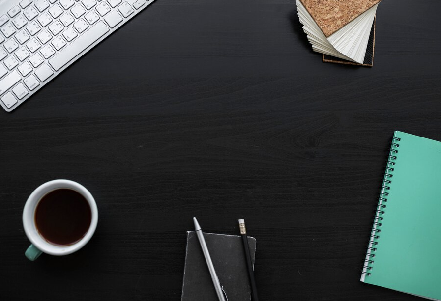
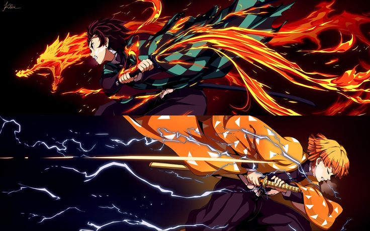

PROJECTS

MIDTERMS
This project was made for the completion of midterms. We were tasked to copy a website template.

SEATWORK #3
This project is composed of various designs for headers and footers. With and without animations.

SEATWORK #4
This project is composed of 2 websites with the features discussed. Header, footer and hero page.